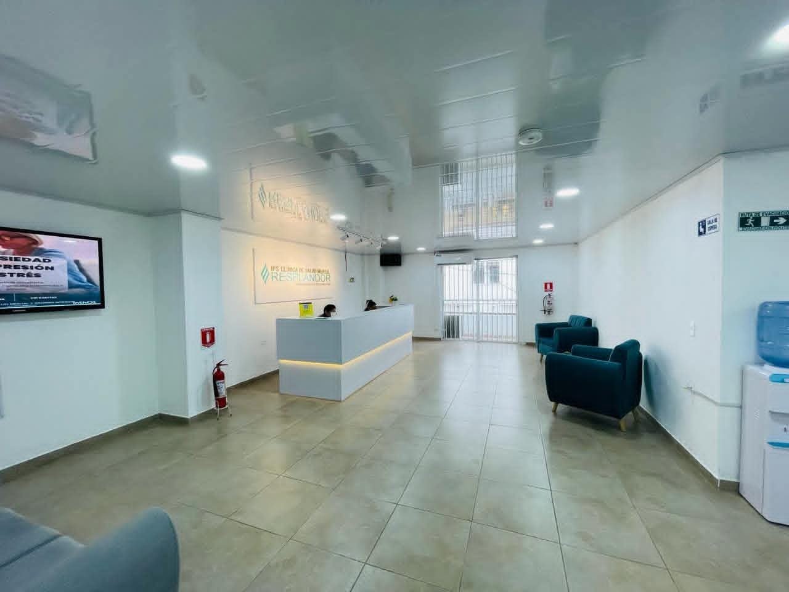
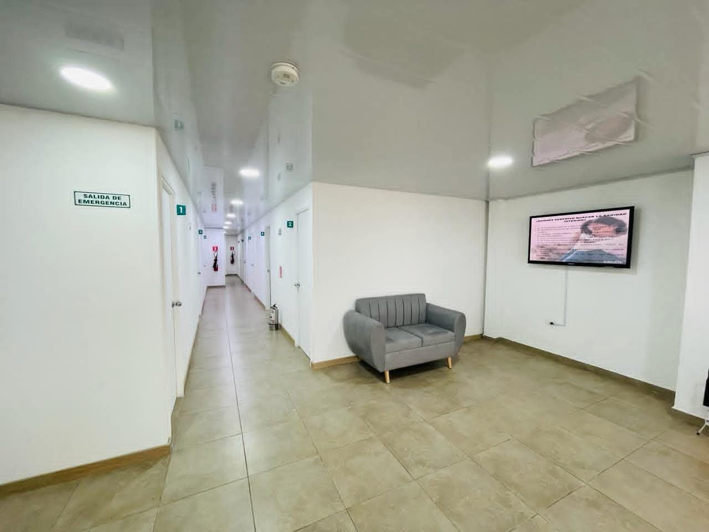
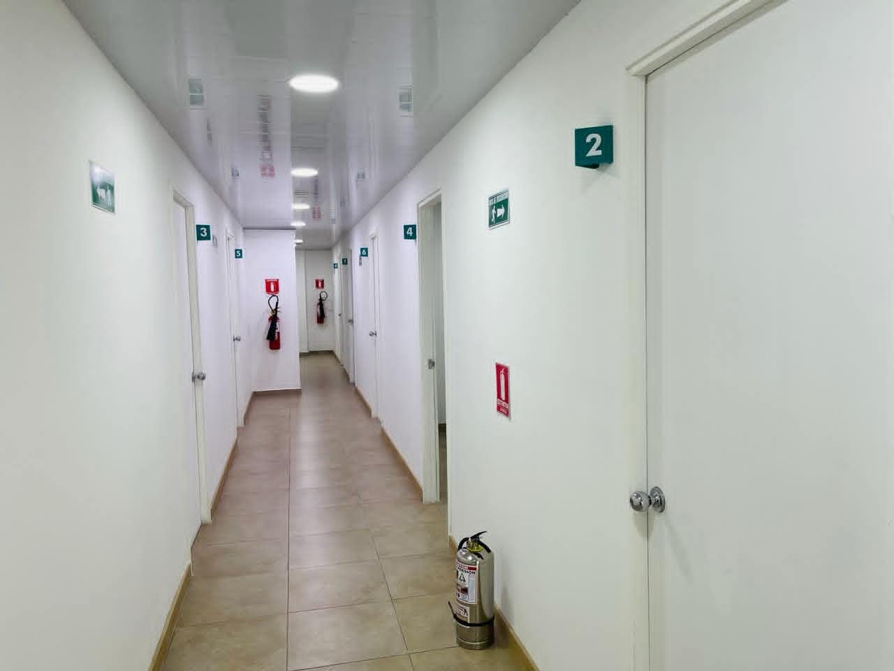
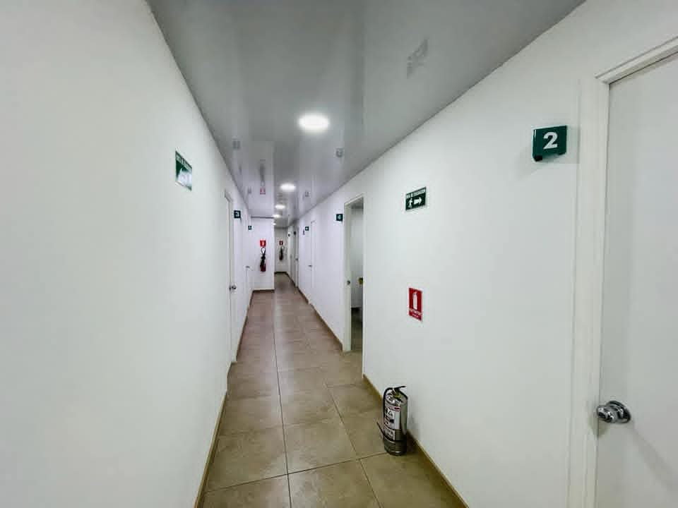
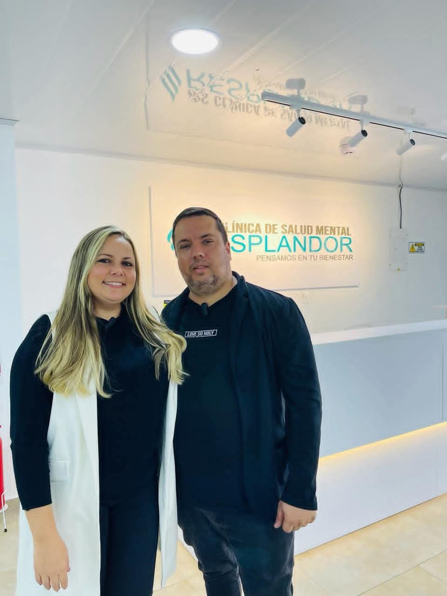

Terapia individual
Un espacio para hablar de tus emociones, retos y bienestar personal.
La ansiedad, la tristeza, el estrés o los conflictos en casa pueden sentirse difíciles de afrontar. En Resplandor encontrarás un espacio de escucha y acompañamiento para dar el primer paso.
.jpeg)
Cada historia es distinta. Te acompañamos a conversar sobre lo que estás viviendo y a encontrar un espacio para cuidar de ti y de tus relaciones.
Conoce nuestras opciones y pregúntanos cuál se ajusta a tus necesidades.
Un espacio para hablar de tus emociones, retos y bienestar personal.
Acompañamiento ante dificultades de comunicación, conflictos o cambios en la relación.
Un espacio de acompañamiento para niños y orientación para sus familias.
Un espacio para conversar sobre la convivencia, los vínculos y los retos familiares.
También ofrecemos sanidad interior. Escríbenos para conocer más sobre este servicio.
Pregúntanos por la modalidad y disponibilidad que mejor se adapte a ti.
Información de la clínica sobre atención individual, de pareja y familiar. Para llamar desde el exterior, agrega +57 antes del número indicado en las imágenes.
.jpeg)
.jpeg)


Te recibimos en espacios pensados para ofrecerte una atención cercana y un ambiente tranquilo. Cada paso hacia tu bienestar merece un lugar donde te sientas acompañado.





En 2023, Giovanni Giraldo y Natalia Restrepo dieron vida a un sueño: crear un lugar donde las personas pudieran sentirse escuchadas, encontrar acompañamiento y volver a mirar el futuro con esperanza.
Así nació la Fundación El Resplandor de Tu Gloria. Cada historia que llega a nosotros nos recuerda por qué comenzamos: porque detrás de cada persona hay emociones, luchas y una valiosa oportunidad para crecer y reconstruirse.
A través de la psicoterapia y la sanidad interior, buscamos acompañar a quienes desean cuidar su bienestar, fortalecer sus relaciones y avanzar en su propio proceso de restauración.
“Creemos en la fuerza de ser escuchados y en la esperanza de volver a empezar.”
Giovanni Giraldo y Natalia Restrepo
Fundadores
Escríbenos por cualquiera de nuestras líneas para consultar servicios, modalidades y disponibilidad de citas.
Calle 45 #49-21, piso 2
Itagüí, Antioquia, Colombia
Área metropolitana de Medellín